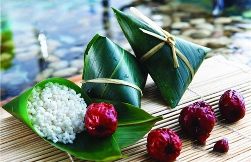
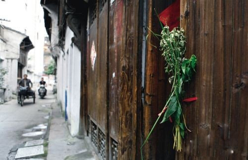
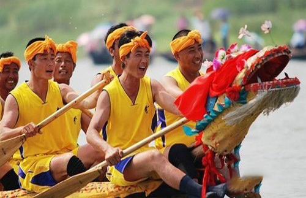
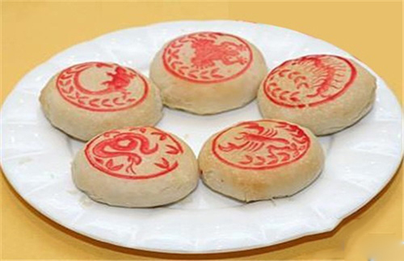
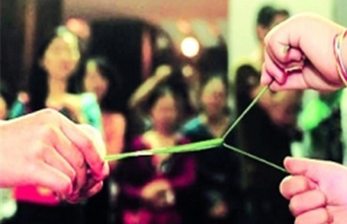
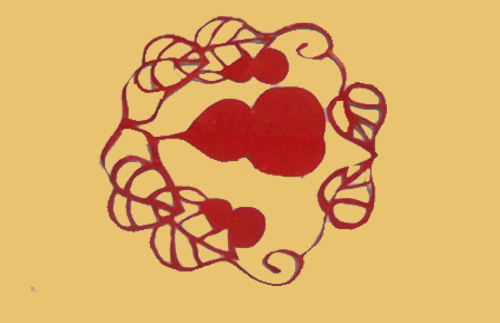
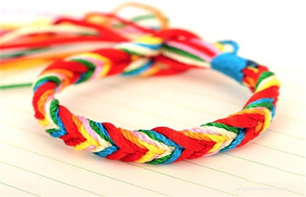
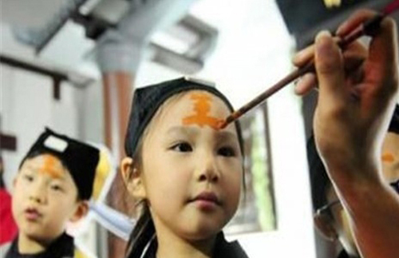

-
包粽子
古时为祭祀投江的屈原，荆楚之人农历五月五日会煮糯米饭或蒸粽糕投入江中，为恐鱼吃掉，人们想出用粽叶包米，外缠彩丝。 后来，吃粽子就成了端午节的风俗。在老北京，粽子用江米、黄米、小枣做成，俗称“二米粽子”。系粽子则用马莲草，也是北京特产。
 -
挂艾草
端午节当天，人们会在院门前和房檐下挂艾草或菖蒲，因为二者皆为中草药，蚊虫害怕这种味道，能起到驱蚊的效果。 因为菖蒲的叶子形状似剑，古人称之为“水剑”，说它可“斩千邪”。 人们便会把菖蒲刻成“小人儿”、“小葫芦”等形状，挂在儿童脖子上，以求吉利。 也会挂在门楣，起到驱魔祛鬼的效果。
 -
赛龙舟
传说楚国人借划龙舟驱散江中之鱼，以免鱼吃掉屈原的身体。 王作楫说，古人赛龙舟时在终点设了鱼标、鸭标、铁标，谁拿到这3个标就获得了冠亚季军。 为了让参赛者从远处看到终点，古人还会在3个标上用锦缎打上蝴蝶结。
 -
吃五毒饼
端午节临近夏至，天气越来越炎热，细菌滋生，人容易中暑生病，古人于是食用五毒饼消病强身。 五毒指蝎子、蛤蟆、壁虎、蜈蚣、蛇，古人将它们的形象盖在饼上，馅儿也是“五馅”：樱桃、荸荠、桑葚、黄杏和江米藕。 据说，吃了五毒饼可以增强抵抗力，灭虫免灾。
 -
斗百草
古时人们到端午节，会结伴去郊外采药，采药途中会斗草玩，逐渐形成习俗。 王作楫介绍，参与游戏的两人会持草相对站立，双手各持一草或花茎的两端。 游戏开始后，二草相勾，双方各自把草向自己方向拉，谁的草或花茎被对方拉断谁为输。
 -
贴葫芦花
老北京人喜欢葫芦，因为葫芦是“福禄”的谐音。 古时人们会用红色毛边纸剪成葫芦，里面包括“五毒”图案，称为“葫芦花”，五月一日贴出，五月五日午时摘下扔掉，称为“扔灾”。
 -
收五毒
端午节时，女孩要在胸前别上“缯子”，据说这种用彩色丝线缝制、样子跟粽子类似的布艺可以驱邪避恶。 男孩则在颈上挂一个葫芦，里面收进“五毒”图案，意思是“收”了五毒。
 -
点雄黄酒
老北京人在端午节还有点雄黄酒的习俗，会把酒在男孩的额头上写“王”字，在女孩的头上点五个点，人们认为，这样蚊虫苍蝇会被雄黄酒破解，驱邪避害。

端午节各种习俗活动仍十分盛行，端午习俗甚多，各地过法虽不尽相同，但食粽子、扒龙船是普遍习俗。 每年端午节前后，包粽子、挂艾草与菖蒲、扒龙船、九狮拜象、游旱龙等等诸多特色节庆活动在全国各地展开， 既有传统习俗活动又有创新元素，可谓各具特色、丰富多彩。端午节期间通过传统民俗活动展演， 既能丰富群众精神文化生活，又能很好的传承和弘扬传统文化。 端午节是中国所有传统节日中在世界上影响最广泛的节日， 受端午文化影响的国家分别有韩国、日本、新加坡、越南、美国、德国、英国等等。